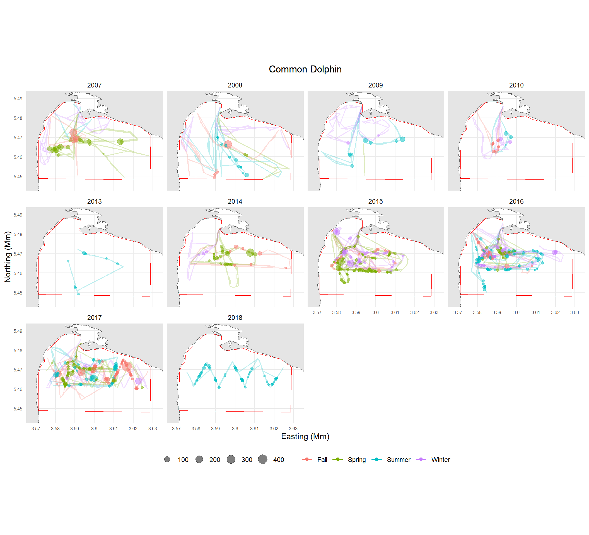
Delfines Comunes
1 Censos
Muchos censos en embarcaciones de oportunidad.
Número de censos por año y estación
| Ano | Spring | Summer | Fall | Winter | TOTAL |
|---|---|---|---|---|---|
| 2007 | 3 | 1 | 2 | 5 | 11 |
| 2008 | 1 | 2 | 3 | 3 | 9 |
| 2009 | 1 | 2 | 0 | 3 | 6 |
| 2010 | 0 | 1 | 1 | 2 | 4 |
| 2013 | 0 | 1 | 0 | 0 | 1 |
| 2014 | 2 | 0 | 1 | 2 | 5 |
| 2015 | 4 | 0 | 2 | 6 | 12 |
| 2016 | 3 | 5 | 4 | 5 | 17 |
| 2017 | 3 | 3 | 3 | 2 | 11 |
| 2018 | 0 | 1 | 0 | 0 | 1 |
Presencia a o largo de todo el año
| season | n.delfines |
|---|---|
| Spring | 2648 |
| Summer | 1880 |
| Fall | 2841 |
| Winter | 1346 |
Grupos de decenas de individuos, con algunos grupos muy grandes

| season | min_group | max_group | mean_group | CV_group |
|---|---|---|---|---|
| Spring | 1 | 250 | 10.0 | 2.5 |
| Summer | 1 | 175 | 8.6 | 1.9 |
| Fall | 1 | 450 | 19.5 | 2.8 |
| Winter | 1 | 200 | 15.3 | 2.4 |
2 Exploratory Data Analysis
2.1 Efecto de barco
2.1.1 Distancia
Parece haber efecto del barco sobre la distancia a la que se detectan delfines comunes. Considerar incluir en la funcion de deteccion

Tamaño muestral, discrimando por embarcación
| Ano | 1 | 2 |
|---|---|---|
| 2007 | 23 | 1 |
| 2008 | 15 | 4 |
| 2009 | 0 | 10 |
| 2010 | 0 | 16 |
| 2013 | 9 | 0 |
| 2014 | 35 | 7 |
| 2015 | 118 | 40 |
| 2016 | 90 | 105 |
| 2017 | 69 | 120 |
| 2018 | 0 | 56 |
2.1.2 Tamaño grupal
Barco no parece tener efecto sobre el tamaño grupal detectado

2.2 Estado del mar
2.2.1 Barco
No hay diferencias en el estado del mar en el que se hicieron censos, dependiendo del barco

2.2.2 Distancia
No hay diferencia entre barcos en la distancia a la que se hicieron observaciones, como funcion del estado del mar
Descartar observaciones con Beaufort = 5
Considerar si descartar Beaufort = 4
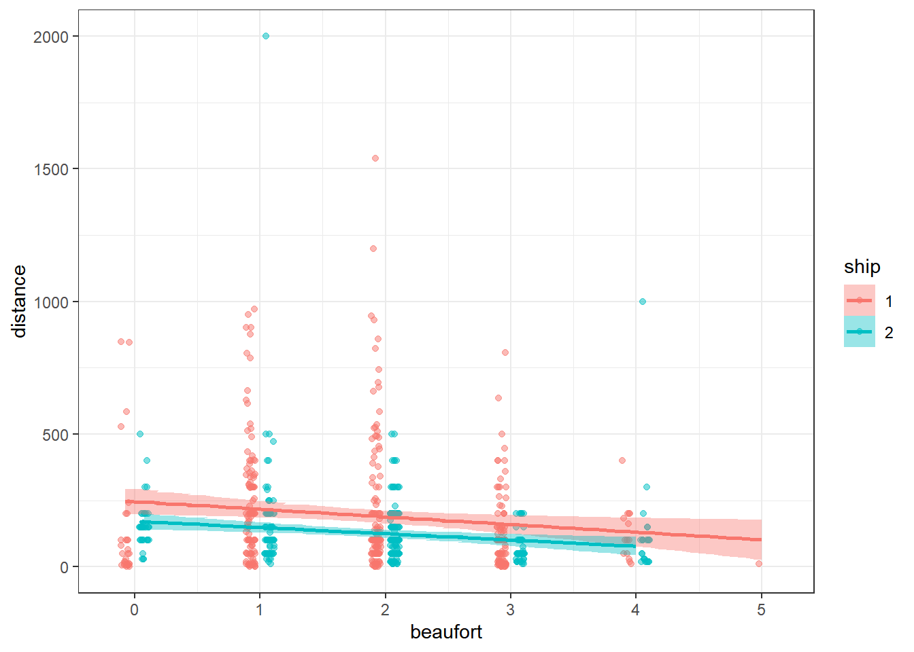
2.3 Variables espaciales
2.3.1 Escala: periodo
2.3.1.1 Profundidad
Parece haber mayor cantidad de detecciones en la zona donde aumenta la profundidad - alrededor de northing 5.47 Mm
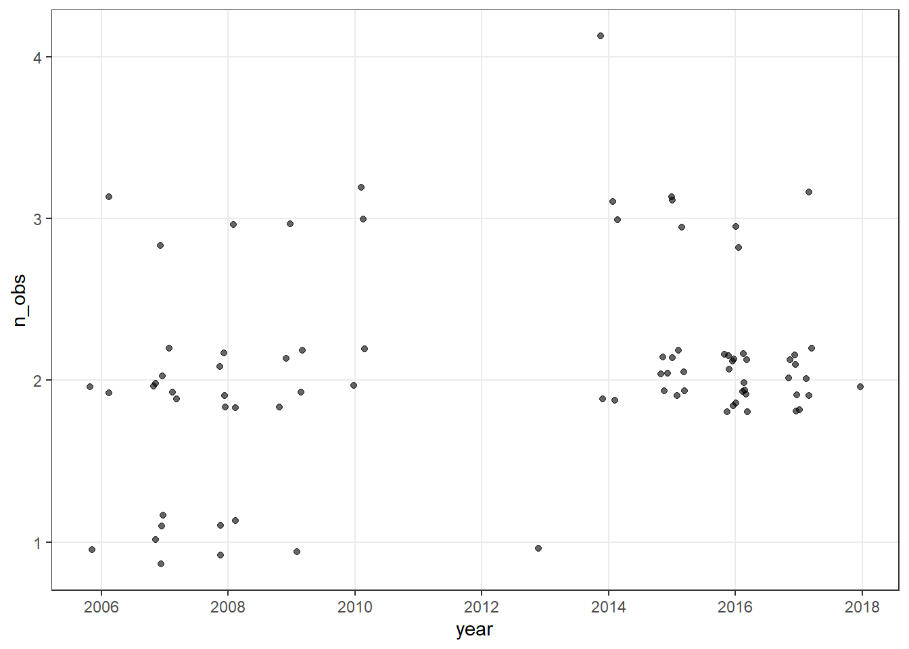
2.3.1.2 Pendiente
La zona donde hay mas detecciones parece ser donde hay una pendiente mas pronunciada
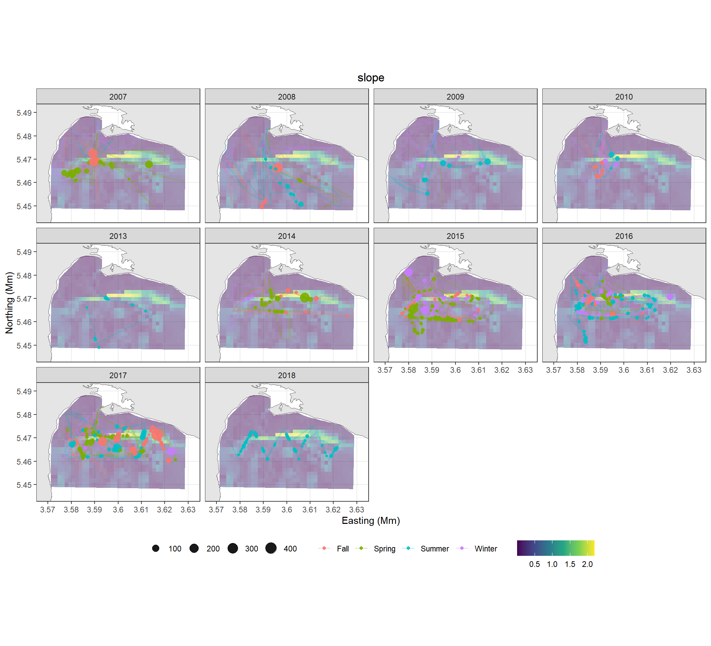
2.3.1.3 Gradiente de temperatura superficial
No parece infuenciar la deteccion de animales

2.3.1.4 Conclusion escala periodo
Evaluar la incorporacion de pendiente y profundidad en la funcion de deteccion - creo que codifican la misma informacion
2.3.2 Escala estacional
Ninguna de las variables ambientales medidas a escala estacional parece tener relacion con la deteccion de animales
2.3.2.1 Temperatura superficial del mar
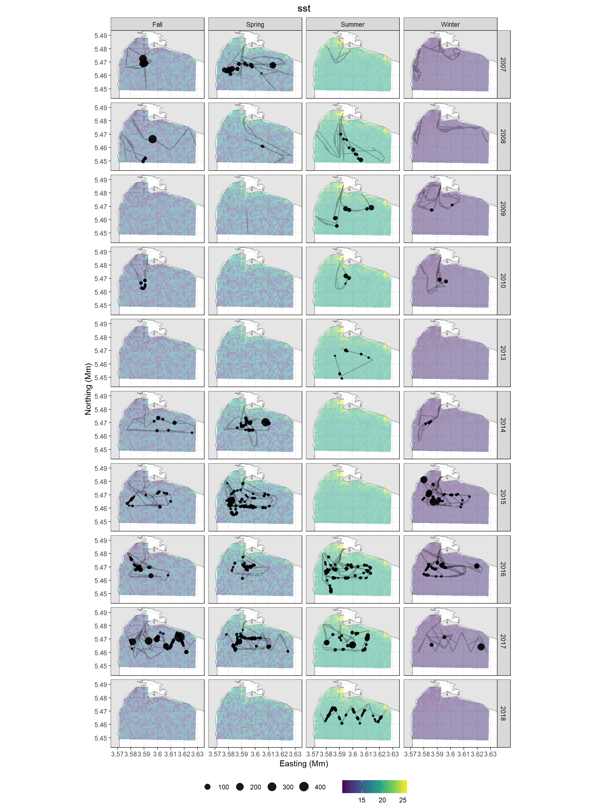
2.3.2.2 Clorofila
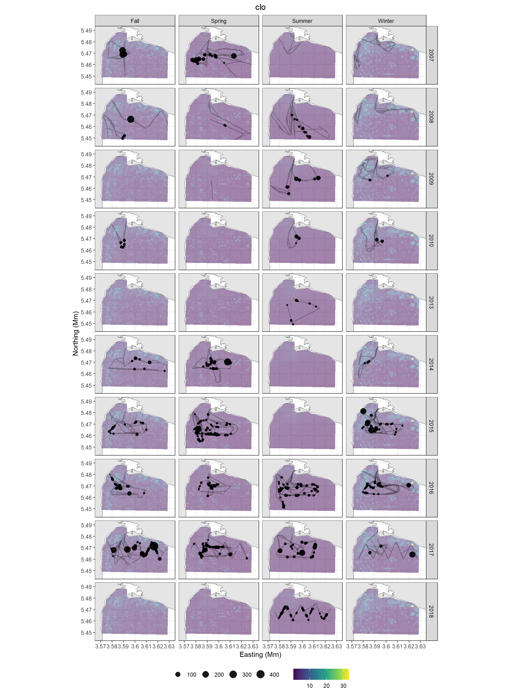
2.3.2.3 Distancia a upwellings
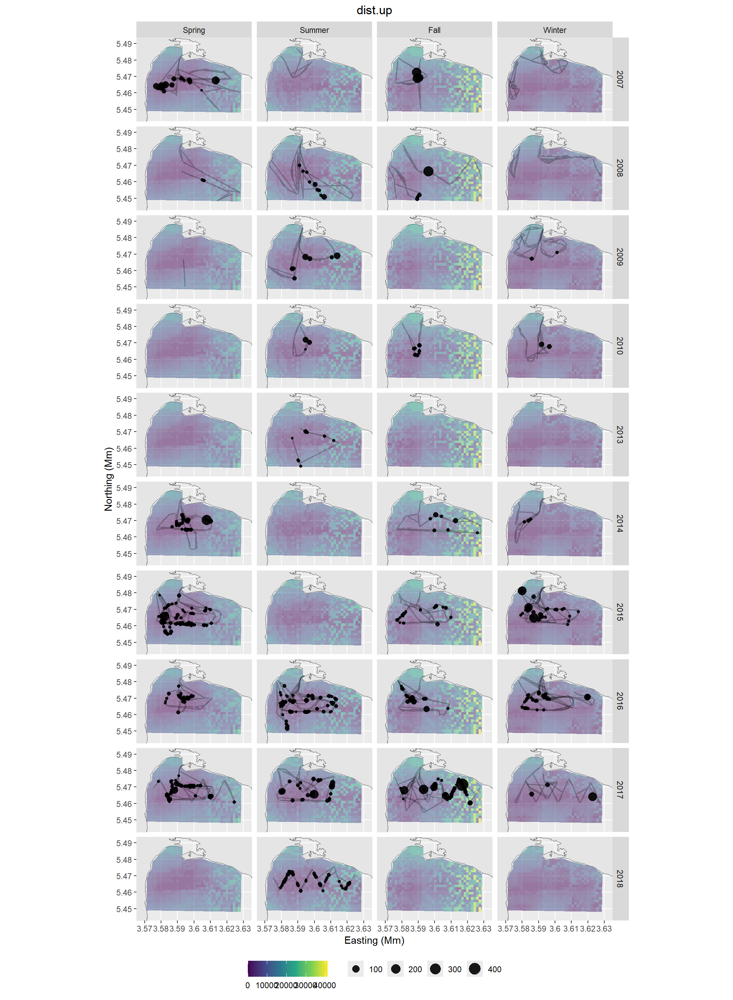
3 Funciones de deteccion
3.1 Datos
Eliminar una observacion con Beaufort = 4
3.2 Funciones de detección básicas
Ajustamos modelos half-normal y hazard rate
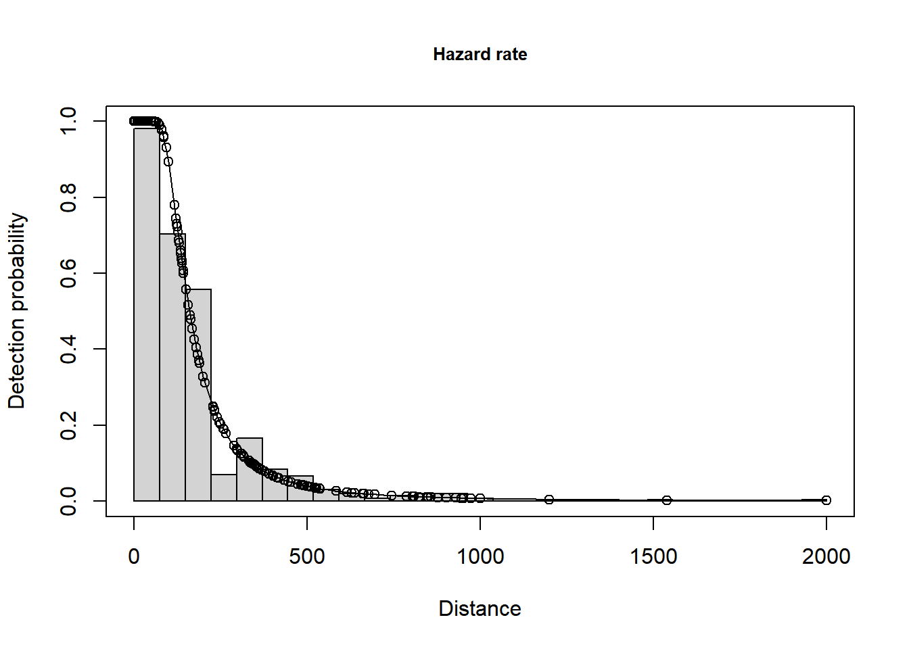
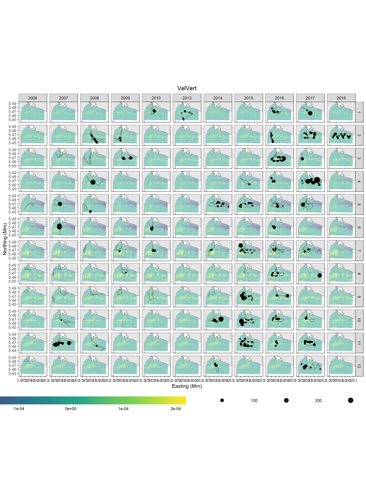
3.3 Truncar datos
Los datos tomados a una gran distancia a contribuyen poca información a la estimación de la forma de la función de detección a distancias cortas y puede resultar en un ajuste pobre y con varianza alta. Por ende, es práctica común truncar los datos.
Aquí se grafica el tamaño grupal como función de la distancia a la que fueron registrados. Se detectaron grupos hasta 2000m de distancia de la trayectoria de la embarcación.

Consejo práctico recibido en curso de Distance Sampling: “consider reducing the truncation distance, w, if more than 5% of the Pa(zi) are <0.2, or if any are less than 0.1”. Probabilidades (Pa) pequeñas tienen mucha influencia en la estimación de abundancia, porque entran en el denominador del estimador Horvitz-Thompson.
Estas son las proporciones de observaciones con diferentes Pa (estimadas usando una función half-normal. 17% de las observaciones son menores a 0.2, y hay 81 observaciones con Pa < 0.1 (no mostrado en la tabla). Por ende, truncar los datos
| bin | n | prop |
|---|---|---|
| (0,0.2] | 121 | 0.17 |
| (0.2,0.4] | 97 | 0.14 |
| (0.4,0.6] | 61 | 0.09 |
| (0.6,0.8] | 15 | 0.02 |
| (0.8,1] | 423 | 0.59 |
Buckland et al. (2001) (p. 16) sugiere truncar donde la probabilidad de detección es ~0.15. Aquí se grafica la función de detección (half-normal). Esta distancia es ~325m. Al truncar a esa distancia, se eliminan 49 datos (~ 11.9% de los datos).
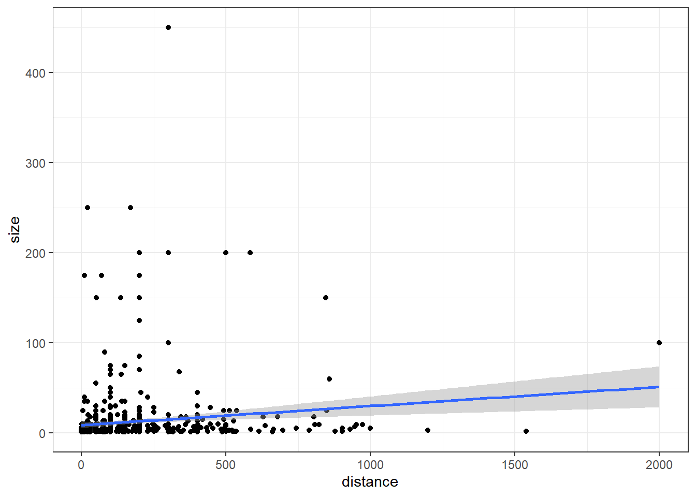
Ajustamos los modelos half-normal y hazard rate con los datos truncados. El modelo hazard rate es mas parsimonioso.
| df | AIC | deltaAIC | |
|---|---|---|---|
| dd.df.hr.trun | 2 | 7060.6 | 0.00 |
| dd.df.hn.trun | 1 | 7063.8 | 3.22 |
3.4 Datos agrupados
Idealmente, las distancias transversales desde el trackline deben ser tomadas exactas. Sin embargo, es común que los observadores redondeen las distancias al tomarlas.
Este es un gráfico de las distancias a las que fueron tomadas las observaciones, con la función de detección hazard rate (observaciones truncadas a 325). Se ve que las distancias fueron redondeadas en 0, 50, 100, 150, 200, 250, 300.
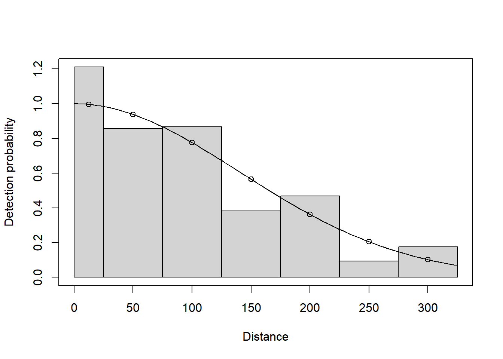
Buckland et al. (2015) (p. 68)
“The Montrave Case Study: Line Transect Sampling” :
[…] We see from Fig. 5.4 that there is rounding in the data. Seven distances were each recorded four times or more, and all are divisible by 5: 5, 15, 20, 25, 35, 45, 50 m […]
[…] To assess model fit, as distinct from revealing rounding in the data, we would like to select cutpoints both for our histogram and for the χ2 goodness-of-fit test to avoid these favoured distances. Here, we use the following cutpoints: 0, 12.5, 22.5, 32.5, 42.5, 52.5, 62.5, 77.5, 95 m. Note the use of wider intervals at larger distances, where smaller numbers of birds are detected […]
Aquí utilizamos una estrategia similar; elegimos puntos de corte 0, 25, 75, 125, 175, 225, 275, 325. El último bin termina en 300, porque la distancia de truncado es 325m.

Ajustamos los modelos half-normal y hazard rate con los datos truncados y aplicando los cutpoints para lidiar con la agrupación de datos. El modelo hazard rate es mas parsimonioso. Utilizar el modelo hazard rate.
| df | AIC | deltaAIC | |
|---|---|---|---|
| dd.df.hr.trun.cp | 2 | 2273.3 | 0.00 |
| dd.df.hn.trun.cp | 1 | 2275.8 | 2.49 |
3.5 Términos de ajuste
Distance allows the selection of three types of series (one type per model)
| Key function | Series adjustment |
|---|---|
| Uniform | Cosine |
| Half normal | Hermite polynomial |
| Hazard rate | Simple polynomial |
Aplicamos los terminos de ajuste a los modelos half-normal y hazard rate
El modelo más parsimonioso es el modelo hazard rate sin término de ajuste.
| df | AIC | deltaAIC | |
|---|---|---|---|
| dd.df.hr.trun.cp | 2 | 2273.3 | 0.00 |
| dd.df.hr.trun.cp.poly | 2 | 2273.3 | 0.00 |
| dd.df.hn.trun.cp | 1 | 2275.8 | 2.49 |
| dd.df.hn.trun.cp.herm | 1 | 2275.8 | 2.49 |
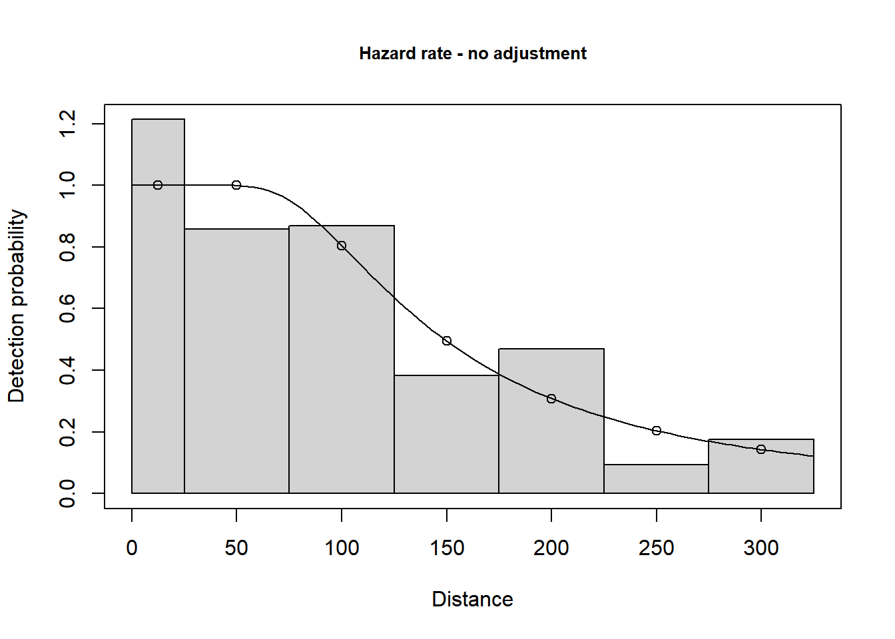
3.6 Covariables
Analizamos incluir
- embarcación
- tamaño grupal
- estado del mar (Beaufort)
en las funciones de detección
La función de detección mas parsimoniosa incluye el estado del mar y el tamaño grupal
| df | AIC | deltaAIC | |
|---|---|---|---|
| dd.df.hr.trun.cp.sizebeauf | 7 | 2245.6 | 0.00 |
| dd.df.hr.trun.cp.beauf | 6 | 2254.7 | 9.10 |
| dd.df.hr.trun.cp.shipbeauf | 7 | 2256.4 | 10.80 |
| dd.df.hr.trun.cp.size | 3 | 2260.8 | 15.18 |
| dd.df.hr.trun.cp.sizeship | 4 | 2261.0 | 15.47 |
| dd.df.hr.trun.cp | 2 | 2273.3 | 27.75 |
| dd.df.hr.trun.cp.ship | 3 | 2273.5 | 27.94 |
3.6.1 Efecto del estado del mar
Este es un gráfico de la función de detección considerando el efecto del estado del mar - la línea negra es la función de detección promedio.
Nótese que los patrones no siguen el patrón esperado; uno esperaría que con Beaufort 0 la detección a distancia fuese mayor, y que con Beaufort 4 la detección fuese menor. Sin embargo, no es así
Probablemente sea un problema de tamaño muestral discriminado por estado del mar. Hay pocos registros en Beaufort 0, la mayoría de los registros fueron tomados en Beaufort 1, 2, y 3.
| beaufort_fct | n |
|---|---|
| 0 | 62 |
| 1 | 155 |
| 2 | 238 |
| 3 | 141 |
| 4 | 36 |
La forma de lidiar con esto es agrupar beaufort 0 y 1 en un grupo y 3 y 4 en un segundo grupo.
Ajustamos los modelos nuevamente. El modelo mas parsimonioso incluye estado de mar y tamaño grupal
| df | AIC | ll | deltaAIC | |
|---|---|---|---|---|
| dd.df.hr.trun.cp.sizebeaufgrp | 5 | 2245.7 | -1117.858 | 0.00 |
| dd.df.hr.trun.cp.beaufgrp | 4 | 2253.4 | -1122.694 | 7.67 |
| dd.df.hr.trun.cp.shipbeaufgrp | 5 | 2255.3 | -1122.632 | 9.55 |
| dd.df.hr.trun.cp.size | 3 | 2260.8 | -1127.377 | 15.04 |
| dd.df.hr.trun.cp.sizeship | 4 | 2261.0 | -1126.520 | 15.32 |
| dd.df.hr.trun.cp | 2 | 2273.3 | -1134.661 | 27.61 |
| dd.df.hr.trun.cp.ship | 3 | 2273.5 | -1133.755 | 27.79 |
3.6.2 Efecto del estado del mar, agrupado
Este es el mismo gráfico, mostrando Beaufort agrupado.
Los patrones son los esperados, y hay diferencias marcadas entre los valores de Beaufort. Conclusión: utilizar estado del mar como covariable.
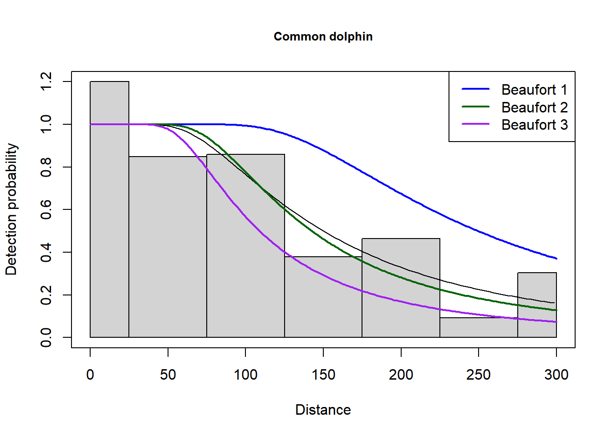
Conclusión: utilizar Beaufort agrupado como covariable en la funcion de deteccion.
Esto significa que hay que producir nuevamente el objeto segdata
3.6.3 Efecto de tamaño grupal
Este es un gráfico de la función de detección considerando el efecto del estado del mar - la línea negra es la función de detección promedio.
Las líneas de colores representan la probabilidad de detección de grupos que representan diferentes cuantiles de tamaños grupales observados.
La forma de la funcion de deteccion cambia para los cuantiles mas altos, mayores a 96%.
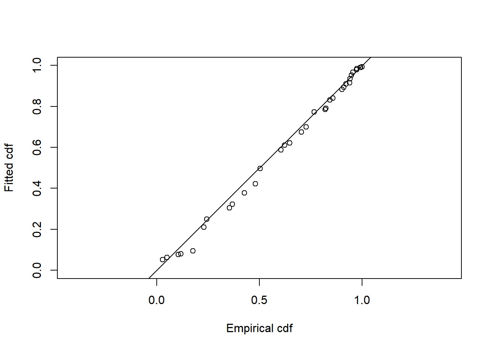
Que el tamaño grupal sea una covariable de la funcion de deteccion termina haciendo el ajuste de density surface models problematico.
Al consultar con Len Thomas, me dijo que hay 2 maneras de solucionar este problema:
- complex bayesian model - he is doing for a paper that they will publish. This woud be the “right way” of doing it
- treat DD as effectively 2 clusters: 1 for small group sizes, a second one for larger gorup sizes. Find the spot where group size will not impact the detection function very much. Fit DSMs to each of the clusters, and then sum them. This is the “good enough” way
Creo que no estamos en situación de tener que implementar la primera solución (Len me dijo que él no lo haría).
Dado el grafico de la funcion de deteccion , creo que tenemos 2 opciones que me gustaria discutir:
ignorar el efecto de tamaño grupal, y entender que las estimaciones de abundancia probablemente esten sesgadas hacia abajo
intentar el ejercicio de tratar a DD como 2 clusters - quizas tengamos que hacer esto para quedarnos tranquilos nosotros, pero no estoy seguro que valga la pena
Quizas este grafico ayude para tomar una decision. Se ve que los tamaños grupales grandes fueron detectados en todas las estaciones, por lo que si adoptamos la estrategia de ignorar el efecto de tamaño grupal no estariamos sesgando las estimaciones estacionales
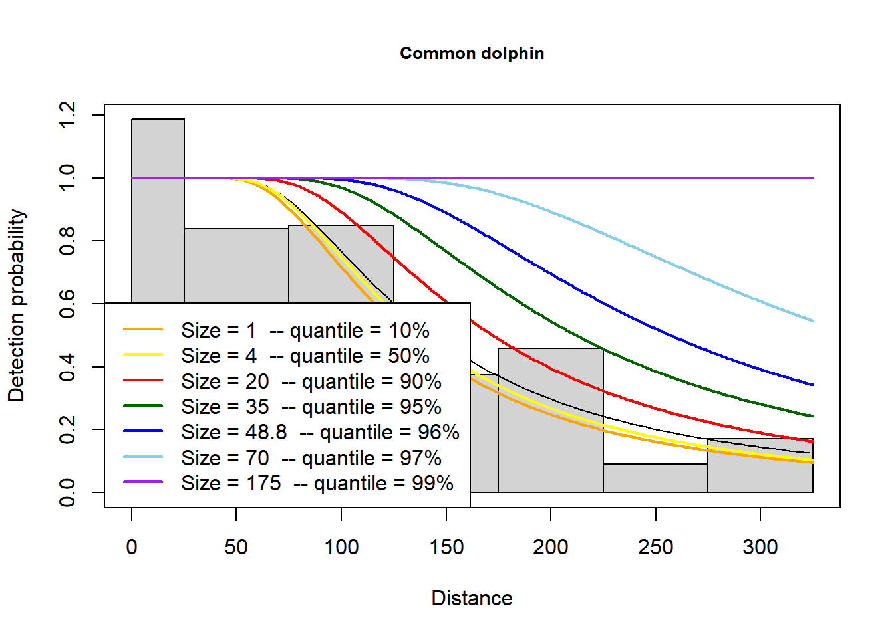
3.6.4 Efecto de embarcación
Existen diferencias entre las curvas de las dos embarcaciones, pero no lo suficientemente marcadas para ser incluidas en la función de detección.
Conclusión: no utilizar embarcación como covariable.
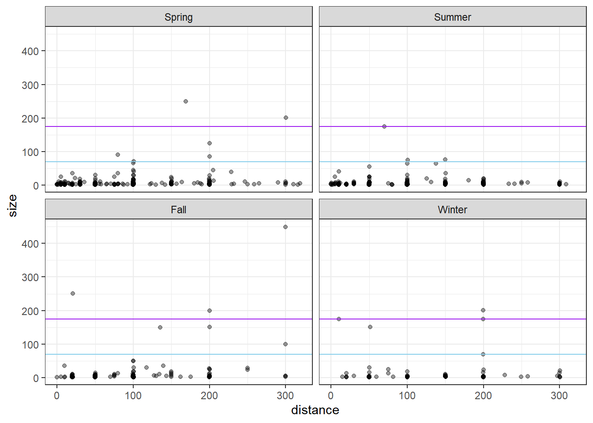
3.7 Conclusión de función de detección
Truncar en trunc.dist_dd: 325m - esto descarta 85 datos (~ 11.9% de los datos)
cutpoints: cutpoints_dd: 0, 25, 75, 125, 175, 225, 275, 325
Hazard rate
No adjustment term
covariables: Beaufort state
tamaño grupal??
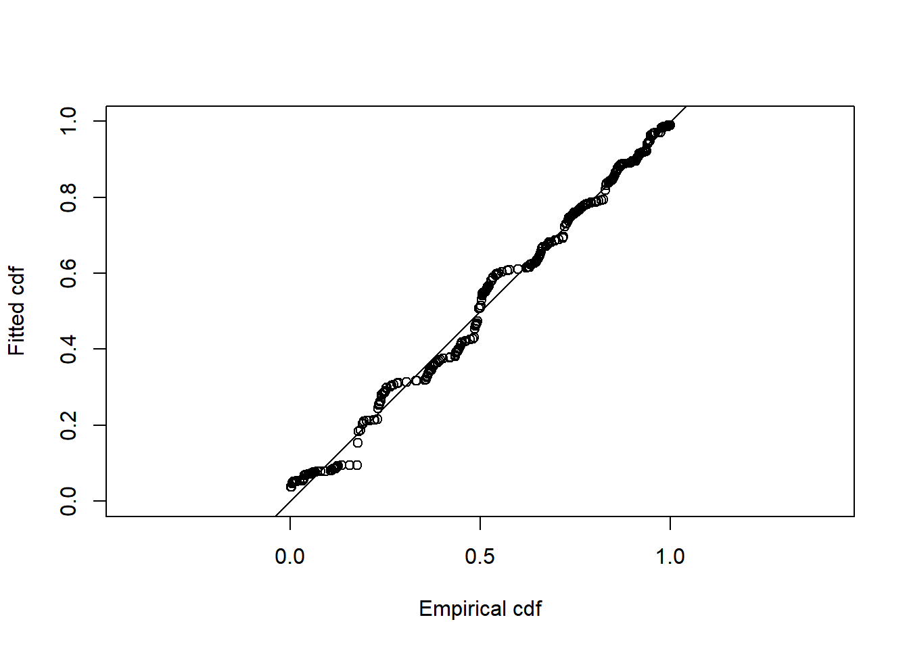
4 Density surface models
Miller et al. (2013)
Necesitamos reconstruir el objeto segdata para delfines comunes. Este objeto debe contener el estado del mar (beaufort) agrupado en cada segmento, para poder implementar la función de detección.
Los largos de los segmentos en el objeto segdata son:
| Largo segmento (m) | n |
|---|---|
| 774 | 1 |
| 790 | 1 |
| 792 | 2 |
| 798 | 1 |
| 799 | 1 |
| 800 | 6282 |
Asumo que los segmentos menores a 800 m son los segmentos que llegan hasta los limites del area de estudio. Para simplificar, y dado que las diferencias son minimas, usare 800 m en todos los segmentos
5 Referencias
Buckland ST, Anderson DR, Burnham KP, Laake JL, Borchers DL, Thomas L (2001) Introduction to distance sampling: Estimating abundance of biological populations. Oxford University Press, Oxford.
Buckland ST, Rexstad EA, Marques TA, Oedekoven CS (2015) Distance sampling: Methods and applications. Springer, Cham.
Miller DL, Burt ML, Rexstad EA, Thomas L (2013) Spatial Models for Distance Sampling Data: Recent Developments and Future Directions. Methods in Ecology and Evolution 4:1001–1010.